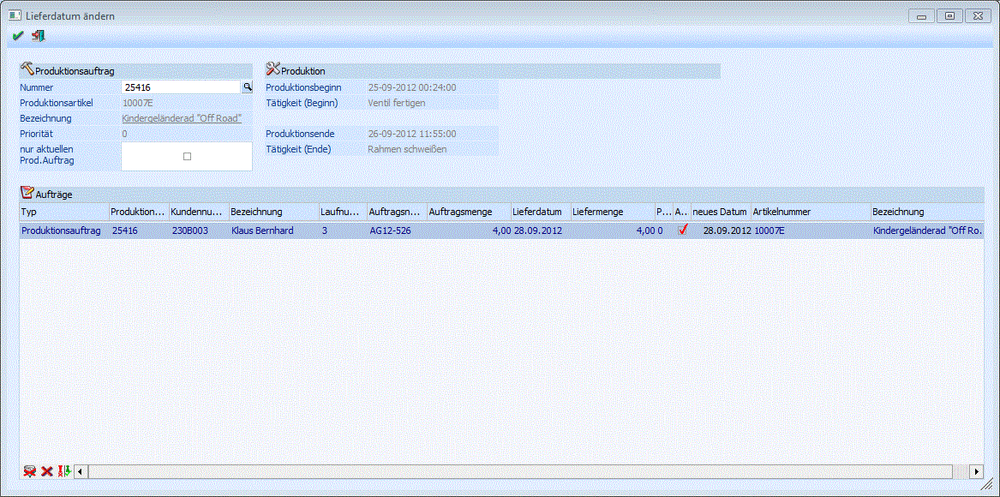

In diesem Fenster kann ein neues Lieferdatum, z.B. das Produktions-Enddatum eines Produktionsauftrags in die dazugehörige Kundenauftragszeile zurückgeschrieben werden. Das Fenster wird über den Button "Kundenaufträge - Lieferdatum ändern" im Produktions-Leitstand geöffnet.
Grundsätzlich wertet diese Funktion Reservierungszielen aus. D.h., nur Produktionsartikel vom Typ "auftragsbezogen" bzw. "Bestellung mit Reservierung" können im Fenster bearbeitet werden. Zusätzlich muss die Option "Reservierungen verwenden" in den FAKT-Parameter aktiviert sein.

Produktionsauftrag
In diesem Bereich werden die Daten vom Produktionsauftrag angezeigt, der im Leitstand beim Öffnen des Fensters selektiert ist.
Ø Nummer
Anzeige der Produktionsauftragsnummer.
Ø Produktionsartikel (Nummer/Bezeichnung)
Anzeige der Artikelnummer bzw. -bezeichnung des Produktionsauftrags.
Ø Priorität
Anzeige der Priorität vom Produktionsauftrag.
Ø Nur aktuellen Produktionsauftrag
Standardmäßig werden in der Tabelle im Fenster alle im Leitstand angezeigten Produktionsaufträge in Verbindung mit einer bestimmten Produktionsartikelnummer angezeigt. Bei Aktivierung von dieser Checkbox wird die Auswahl in der Tabelle auf den "ausrufenden" Produktionsauftrag eingeschränkt.
Produktion
Der Produktions-Startdatum bzw. -Enddatum und die jeweiligen ersten bzw. letzten Tätigkeiten werden für den ausrufenden Produktionsauftrag angezeigt (d.h. der Produktionsauftrag der aktuell im Leitstand selektiert ist).
Aufträge
In der Tabelle werden alle im Leitstand selektierten Produktionsaufträge für die selektierten Produktionsartikelnummer angezeigt. Pro Zeile werden Information zu den dazugehörigen Kundenauftrag aufgelistet (Kundennummer, -bezeichnung, Beleglaufnummer, Auftragsnummer, Auftragsmenge, Lieferdatum und Priorität).
Ø Auswahl
Bei Aktivierung von dieser Checkbox in der jeweiligen Tabellenzeile kann ein neues Datum (z.B. das oben angeführte Produktions-Enddatum) als Lieferdatum in die Kundenauftragszeile zurückgeschrieben werden.
Ø Neues Datum
Hier kann ein neues Datum als Lieferdatum für die dazugehörige Kundenauftragszeile eingeben werden. Standardmäßig wird das aktuelle Lieferdatum aus der Belegzeile als Info vorgeschlagen.
Buttons
Ø OK
Nach Bestätigung mit diesem Button (bzw. mit der F5-Taste) wird das neue Lieferdatum in den Kundenauftrag zurückgeschrieben. Zusätzlich werden die relevanten Reservierungszeilen entsprechend geändert.
Ø Ende
Das Fenster wird geschlossen. Es werden keine Änderungen gespeichert.